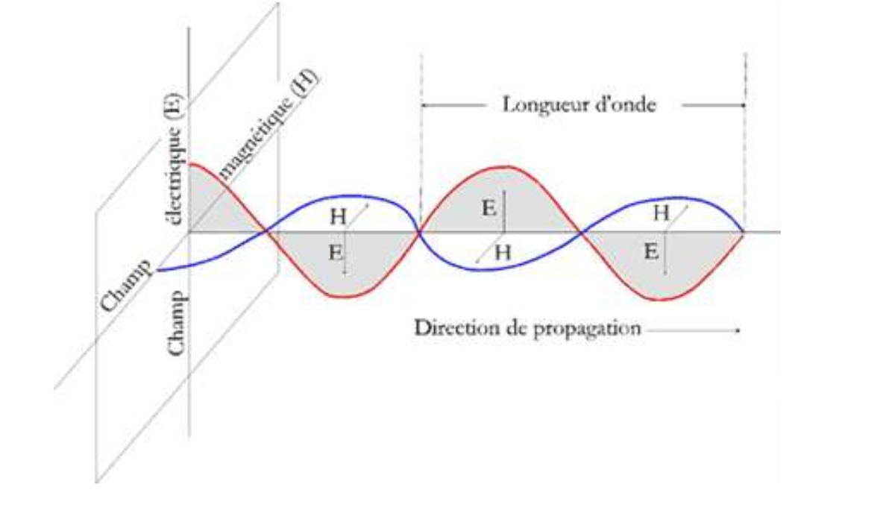
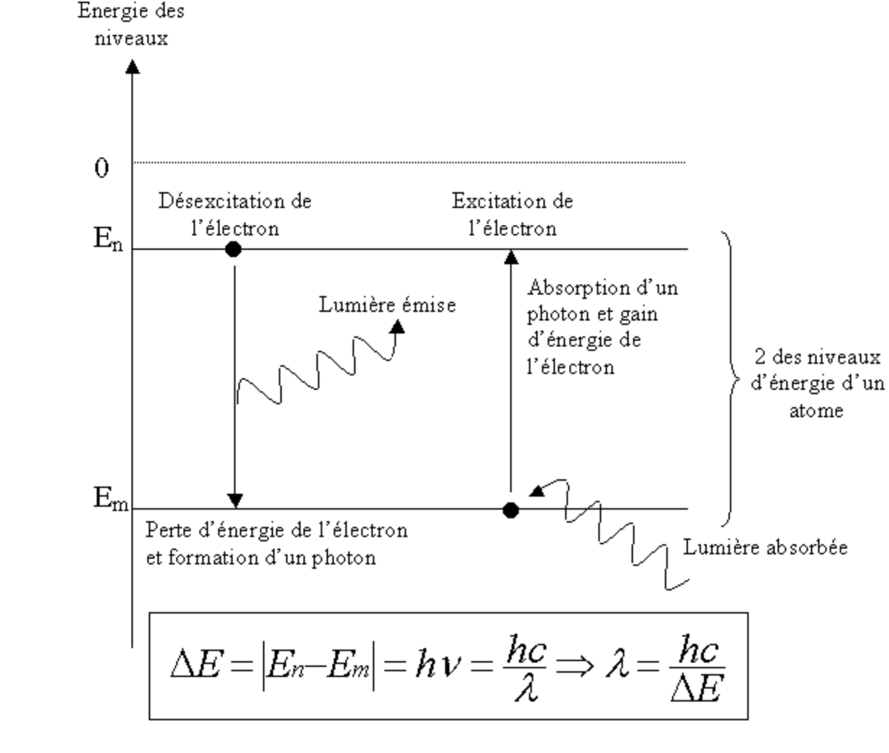
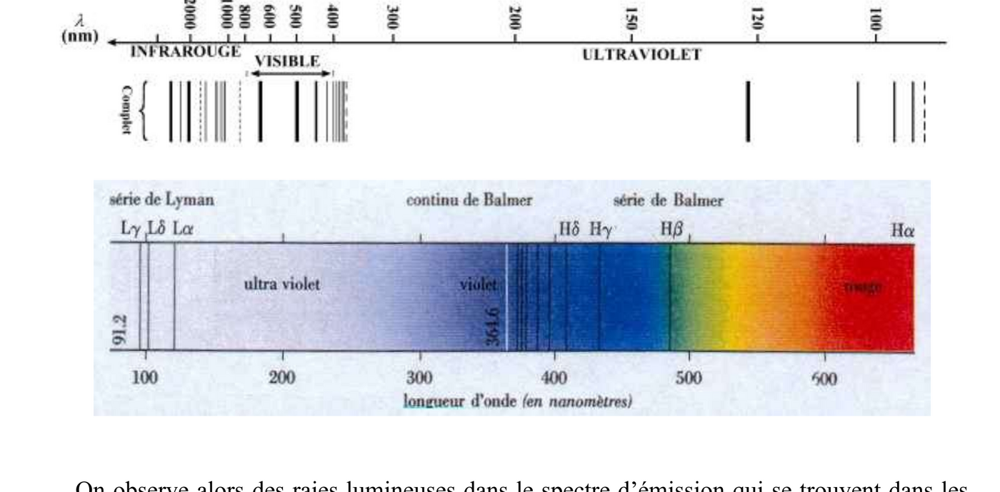
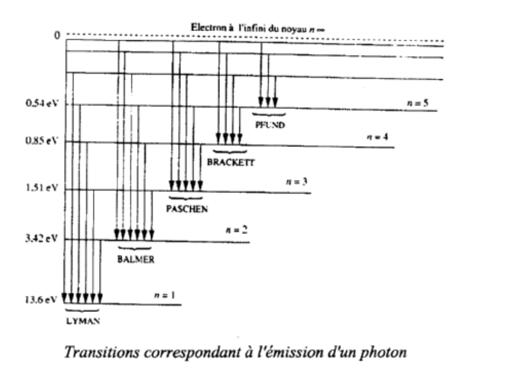
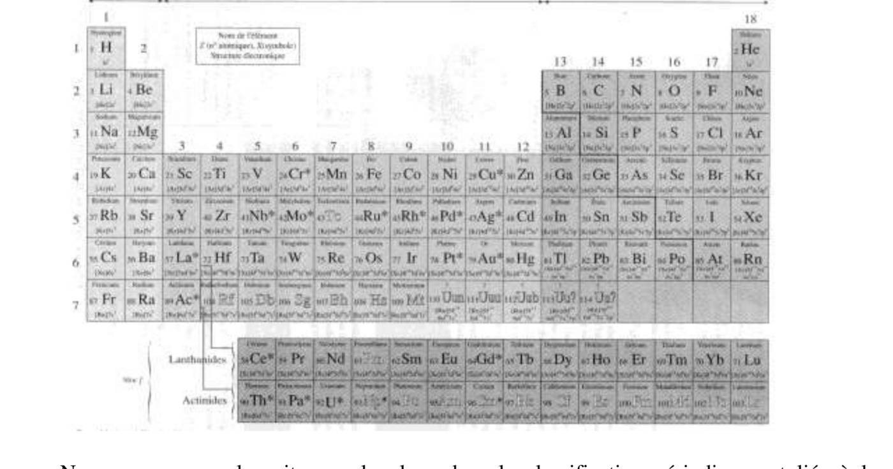
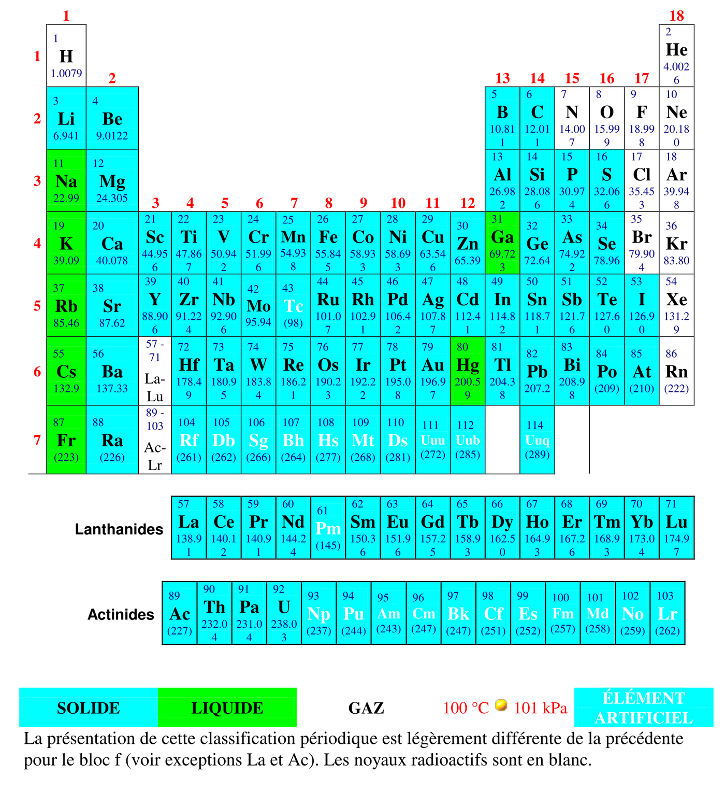
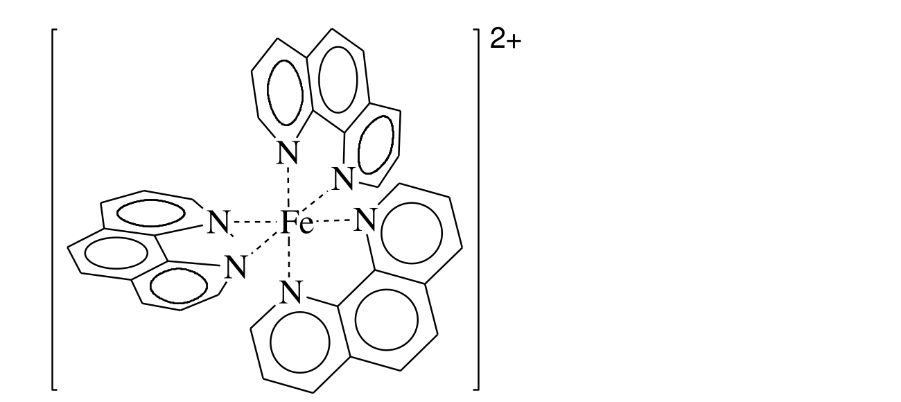
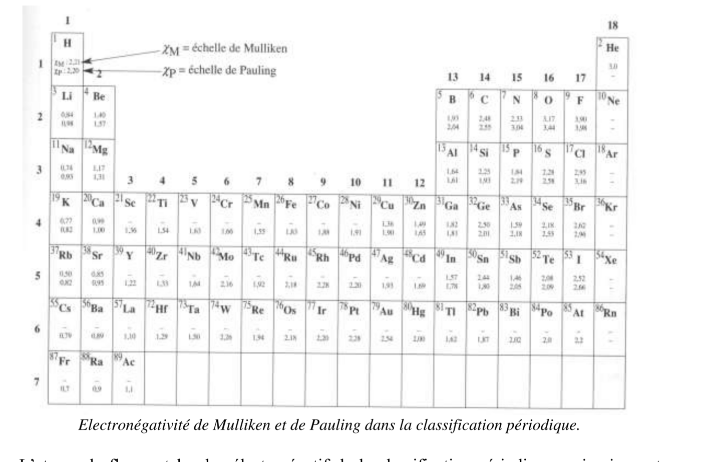

Chimie — Résumé de cours · PCSI · Sainte-Geneviève (Versailles), S. Falcou · mis au propre le 18/09/2026
1. L'atome
Définition 1 — atome
L'atome est neutre, composé de $Z$ protons (charge $+e$, $m_p\approx1{,}6726\times10^{-27}\,\mathrm{kg}$), $A-Z$ neutrons (neutres, $m_n\approx1{,}6749\times10^{-27}\,\mathrm{kg}$) et $Z$ électrons (charge $-e$, $m_e\approx9{,}1095\times10^{-31}\,\mathrm{kg}$). $Z$ est le nombre de charge (numéro atomique), $A$ le nombre de masse.
Ordres de grandeur
Noyau : rayon $\sim10^{-14}\,\mathrm{m}$. Atome (nuage électronique) : rayon $\sim10^{-10}\,\mathrm{m}$ (1 angström). Les atomes sont donc essentiellement constitués de vide (à l'échelle de la Terre, l'atome correspondrait à ~200 fois la distance Terre-Lune). Les électrons ($m_e\approx m_p/2000$) ont une masse négligeable devant celle des nucléons :
$$m_{atome}\approx Z\,m_p+(A-Z)\,m_n\approx A\,m_p$$
d'où l'appellation « nombre de masse » pour $A$, et $N_A\,m_p\approx1\,\mathrm{g}$, donc la masse molaire atomique est numériquement voisine de $A$ en g·mol⁻¹.
Définition 2 — élément, nucléide, isotopes
$Z$ définit un élément chimique ; le couple $(A,Z)$ définit un nucléide, noté $^A_Z\mathrm{X}$. Deux nucléides de même élément ($Z$ identique) et de $A$ différent sont des isotopes.
Sur ~92 éléments naturels et ~1500 nucléides connus (dont ~300 naturels), l'uranium ($Z=92$) est l'élément naturel le plus lourd. Exemple : l'hydrogène a trois isotopes — $^1_1\mathrm{H}$, $^2_1\mathrm{H}\equiv\mathrm{D}$ (deutérium, non radioactif), $^3_1\mathrm{H}\equiv\mathrm{T}$ (tritium, radioactif). Abondances isotopiques naturelles : H 99,985 % / D 0,015 % ; $^{12}\mathrm{C}$ 98,89 % / $^{13}\mathrm{C}$ 1,11 % ; $^{35}\mathrm{Cl}$ 75,8 % / $^{37}\mathrm{Cl}$ 24,2 %.
Stabilité des noyaux
Quand le nombre de protons augmente, la répulsion électrostatique finit par l'emporter sur l'interaction forte : les noyaux stables nécessitent $N=Z$ pour les noyaux légers ($Z<20$) et $N\geqslant Z$ au-delà. Un noyau instable tend à revenir vers sa zone de stabilité : émission $\beta^-$ (noyau léger, $N>Z$), $\beta^+$ ($N110$ protons) sont formés par fusion de deux noyaux plus légers ; leur très grande instabilité (fission avant détection directe) a conduit le GANIL (Grand Accélérateur National d'Ions Lourds, CEA/CNRS) à mettre en évidence, via le détecteur Indra, des temps de fission $>10^{-18}\,\mathrm{s}$ pour des noyaux à 120 et 124 protons, suffisamment longs pour signer sans ambiguïté leur formation.
2. Quantification de l'énergie des atomes
Définition 3 — grandeur quantifiée
Dire qu'une grandeur est quantifiée signifie qu'elle ne peut pas prendre toutes les valeurs possibles, mais seulement certaines (éventuellement en nombre infini, réparties de façon discrète).
Ondes électromagnétiques, absorption et émission
Une onde électromagnétique (champs électrique et magnétique couplés se propageant dans l'espace) est caractérisée par sa longueur d'onde dans le vide $\lambda_0$, sa période $T$ ou sa fréquence $\nu=1/T$, reliées par $\lambda_0=cT=c/\nu$ ($c\approx3\times10^8\,\mathrm{m\cdot s^{-1}}$).

Onde électromagnétique : les champs électrique (E) et magnétique (H), perpendiculaires l'un à l'autre et à la direction de propagation, oscillent en phase ; la longueur d'onde $\lambda_0$ est la périodicité spatiale de cette double oscillation.Fig. 1 — Domaines des ondes électromagnétiques (γ, X : transitions nucléaires/électrons de cœur ; UV-visible-IR : électrons de valence, vibrations ; radio : courants haute fréquence). Le domaine visible (400-770 nm) est très étroit comparé à l'ensemble du spectre.
Dualité onde-corpuscule
La lumière peut être vue comme une onde ou comme un flux de particules sans masse, les photons, d'énergie $E=h\nu$ ($h=6{,}63\times10^{-34}\,\mathrm{J\cdot s}$, constante de Planck). Unité adaptée à l'échelle atomique : l'électron-volt, $1\,\mathrm{eV}=1{,}6\times10^{-19}\,\mathrm{J}$. Plus généralement, la longueur d'onde de de Broglie associée à toute particule de quantité de mouvement $p$ est $\lambda=h/p$.
Exemple : un photon de $\lambda_0=500\,\mathrm{nm}$ a une énergie $E=hc/\lambda_0=6{,}63\times10^{-34}\times3\times10^8/500\times10^{-9}\approx3{,}98\times10^{-19}\,\mathrm{J}\approx2{,}49\,\mathrm{eV}$.
Principe de conservation de l'énergie (émission/absorption)
L'énergie du photon émis ou absorbé par la matière est exactement égale à la différence d'énergie entre les deux niveaux énergétiques entre lesquels a lieu la transition :
$$\Delta E=|E_n-E_m|=h\nu=\frac{hc}{\lambda}$$

Transition entre deux niveaux d'énergie $E_n$ et $E_m$ ($E_n>E_m$) : désexcitation avec émission d'un photon (flèche vers le bas), excitation avec absorption d'un photon (flèche vers le haut).
Spectre d'émission de l'atome d'hydrogène
Un échantillon de $\mathrm{H_2}$ excité par décharge électrique ($\mathrm{H_2(g)}\to2\,\mathrm{H^*(g)}$) émet des photons dont le spectre présente des raies dans l'UV, le visible et l'IR (4 raies visibles seulement, série de Balmer, $n=2$). Chaque série de raies (Lyman $n=1$, Balmer $n=2$, Paschen $n=3$, Brackett $n=4$, Pfund $n=5$) vérifie :

Spectre d'émission (réel) de l'atome d'hydrogène : raies dans l'infrarouge, le visible et l'ultraviolet (haut) ; agrandissement coloré autour de la série de Balmer et de la limite de la série de Lyman à 91,2 nm (bas).
$$\sigma=\frac1\lambda=R_H\left(\frac{1}{n^2}-\frac{1}{n'^2}\right)\qquad n'>n,\ n,n'\in\mathbb{N}^*$$
⚠️ Correction — valeur de la constante de Rydberg $R_H$
Le document source indique $R_H=1{,}09\,\mathrm{cm^{-1}}$, ce qui est erroné de cinq ordres de grandeur (probable coquille de mise en forme d'un exposant). La valeur correcte de la constante de Rydberg pour l'hydrogène est $R_H\approx1{,}097\times10^{7}\,\mathrm{m^{-1}}=1{,}097\times10^{5}\,\mathrm{cm^{-1}}$ (source : CODATA ; cette valeur redonne bien, par exemple, la raie $H_\alpha$ à 656,2 nm avec $n=2,n'=3$).
Remarques
La mécanique classique ne permet pas d'interpréter ce résultat (elle prédirait un continuum d'énergies) : il faut la mécanique quantique. Un spectre d'absorption de l'hydrogène gazeux à basse température ne présente que la série de Lyman (une seule série de raies noires), $\sigma=R_H(1-1/n'^2)$.
Énergie de l'hydrogène et des hydrogénoïdes
Propriété 1 — quantification de l'énergie
L'énergie de l'atome d'hydrogène (référence $E_\infty=0$) est quantifiée par le nombre quantique principal $n\in\mathbb{N}^*$ :
$$E_n=-\frac{R_y}{n^2}=-\frac{E_0}{n^2}=-\frac{13{,}6}{n^2}\,\mathrm{eV}\qquad R_y=2{,}18\times10^{-18}\,\mathrm{J}$$
État fondamental ($n=1$) : $-13{,}6\,\mathrm{eV}$ ; premier état excité ($n=2$) : $-3{,}40\,\mathrm{eV}$ ; deuxième état excité ($n=3$) : $-1{,}51\,\mathrm{eV}$.

Diagramme énergétique de l'atome d'hydrogène : transitions correspondant à l'émission d'un photon vers les niveaux $n=1$ (Lyman), $n=2$ (Balmer), $n=3$ (Paschen), $n=4$ (Brackett) et $n=5$ (Pfund).
Pour un atome hydrogénoïde (noyau de charge $Ze$ et un seul électron, ex. $\mathrm{He^+}$, $\mathrm{Li^{2+}}$) : $E_n=-R_yZ^2/n^2$. Exemple : énergie d'ionisation de l'hydrogénoïde du carbone $\mathrm{C^{5+}}$ ($Z=6$, état fondamental) : $EI=E_\infty-E_1=E_0Z^2=489{,}6\,\mathrm{eV}$.
3. Configuration électronique d'un atome
Nombres quantiques
Nombre
Nom
Valeurs
$n$
principal
$n\in\mathbb{N}^*$
$l$
secondaire (azimutal)
$0\leqslant l
$m$
tertiaire (magnétique)
$-l\leqslant m\leqslant l$, entier
$m_s$
magnétique de spin
$+\tfrac12$ ou $-\tfrac12$
Une orbitale atomique (OA), notée $nx_m$ ($x$ = lettre dépendant de $l$), dépend de $(n,l,m)$. Correspondance niveau/sous-niveau : $n=1,2,3,4,5,6\to$ K,L,M,N,O,P ; $l=0,1,2,3,4\to$ s,p,d,f,g.
Remarque
L'énergie d'un électron ne dépend que de $n$ pour l'hydrogène et les hydrogénoïdes (systèmes à un électron) : il y a alors $n^2$ orbitales dégénérées de même énergie $-R_yZ^2/n^2$. Pour un atome polyélectronique, l'énergie dépend de $(n,l)$.
Règles de remplissage des OA
Règle de Klechkowsky
Dans un atome polyélectronique à l'état fondamental, les sous-couches se remplissent par $(n+l)$ croissant ; pour deux valeurs égales de $(n+l)$, c'est la sous-couche de $n$ le plus petit qui se remplit en premier.
Ordre d'énergie croissante qui en résulte : $1s,2s,2p,3s,3p,4s,3d,4p,5s,4d,5p,6s,...$ — noter l'interpénétration : $4s$ (n+l=4) est plus basse en énergie que $3d$ (n+l=5).
Principe d'exclusion de Pauli
Deux électrons d'un même atome ne peuvent pas être dans le même état quantique $(n,l,m,m_s)$. Conséquence : au maximum 2 électrons par orbitale atomique (les deux valeurs de $m_s$) ; au maximum $2(2l+1)$ électrons par niveau $(n,l)$ — soit 2 pour $ns$, 6 pour $np$, 10 pour $nd$, 14 pour $nf$.
Règle de Hund
Lorsqu'on dispose de plusieurs orbitales dégénérées de même énergie, les électrons sont placés de façon à occuper le maximum d'orbitales atomiques ($m$ différents) avec des spins parallèles (même $m_s$), avant appariement.
Conséquence expérimentale
La présence d'électrons célibataires confère des propriétés magnétiques particulières : une espèce sans électron célibataire est diamagnétique, avec au moins un électron célibataire elle est paramagnétique.
Applications, exceptions
Exemples de configurations fondamentales : Azote N (Z=7) $1s^22s^22p^3$ ; Fer Fe (Z=26) $1s^22s^22p^63s^23p^64s^23d^6$. Pour les ions, on ajoute/retire des électrons à partir de la configuration de l'atome ; pour les métaux du bloc d, ce sont les électrons $ns$ qui partent en premier (ex. $\mathrm{Fe^{2+}}$ : $[\mathrm{Ar}]3d^6$, pas $4s^23d^4$), bien qu'ils soient énergétiquement plus bas, car ils sont plus externes.
⚠️ Exceptions à la règle de Klechkowsky
Des interactions électron-électron non prises en compte par la règle de Klechkowsky favorisent l'obtention d'un sous-groupe d'OA dégénérées vide, à moitié rempli ou complètement rempli (énergie d'appariement déstabilisante évitée). Exemples : Chrome Cr (Z=24) attendu $4s^23d^4$, réel $4s^13d^5$ ; Cuivre Cu (Z=29) attendu $4s^23d^9$, réel $4s^13d^{10}$ ; Palladium Pd (Z=46, promotion de 2 électrons) réel $5s^04d^{10}$ ; Lanthane La et Gadolinium Gd (promotion s/f→d). Ces exceptions se multiplient quand $Z$ augmente (niveaux de plus en plus proches en énergie).

Classification périodique : les éléments dont la configuration électronique fondamentale déroge à la règle de Klechkowsky sont signalés par un astérisque (*).
Électrons de cœur et de valence
Définition 4
Les électrons de valence (plus haute énergie, plus externes) interviennent dans la réactivité chimique et la formation des liaisons ; les électrons de cœur (plus proches du noyau, plus liés) n'y participent pas. En général, les électrons de valence occupent le(s) niveau(x) de $n$ le plus élevé et, en cas d'interpénétration, les niveaux remplis après le premier niveau de $n$ maximal (sauf sous-couche $d$ complète, qui reste électrons de cœur).
Moseley (1887-1913) fut le premier à utiliser $Z$ comme variable de classement. Mendeleïev (1834-1907), en classant les éléments connus suivant la périodicité de leurs propriétés chimiques, put prédire l'existence d'éléments alors non découverts.
Structure en blocs
Le tableau se répartit en 5 blocs, nommés d'après la dernière OA remplie dans la configuration fondamentale : bloc s (H, He, colonnes 1-2), bloc p (colonnes 13-18), bloc d (colonnes 3-12, à partir de la 3e ligne), bloc f (lanthanides, actinides, inséré entre s et d). Chaque ligne (période) débute par le remplissage d'une sous-couche $ns$ et finit par $np$ (si elle existe).

Classification périodique : état physique de chaque corps simple à 100 °C et 101 kPa (solide, liquide, gaz, élément artificiel) ; les noyaux radioactifs sont en blanc.
Définition 5 — élément de transition
Un élément de transition est caractérisé par un sous-niveau $d$ partiellement rempli, à l'état atomique ou dans un état d'oxydation usuel (ex. Sc, $[\mathrm{Ar}]4s^23d^1$, est un élément de transition ; Zn, $[\mathrm{Ar}]4s^23d^{10}$, existant aussi sous forme $\mathrm{Zn^{2+}}\,[\mathrm{Ar}]3d^{10}$, n'en est pas un). Ils forment souvent plusieurs cations (Fe²⁺/Fe³⁺), sont souvent paramagnétiques, et interviennent dans de nombreux processus biologiques via la formation de complexes (ex. hémoglobine, transport de l'O₂).

Structure de l'hème : le cation Fe²⁺ (élément de transition) forme un complexe plan avec les quatre atomes d'azote d'un macrocycle porphyrine — motif présent dans l'hémoglobine pour le transport de l'O₂.
Quelques familles
Colonne
Famille
Propriété clé
1 (Li, Na, K, Rb, Cs, Fr)
alcalins
1 e⁻ de valence, métaux réducteurs, électropositifs ($\mathrm{Na(s)\to Na^+(aq)+e^-}$), réagissent avec l'eau (formation de $\mathrm{H_2}$)
couches complètes, très inertes chimiquement (rare contre-exemple : $\mathrm{XeO_4}$)
Remarque — l'hydrogène
H n'appartient pas à la famille des alcalins (ce n'est pas un métal) : il forme le proton $\mathrm{H^+}$ ($1s^0$) et l'ion hydrure $\mathrm{H^-}$ (très basique, $1s^2=[\mathrm{He}]$).
5. Évolution de quelques propriétés dans la classification
Électronégativité
Définition 6 — électronégativité
L'électronégativité $\chi$ (concept qualitatif, non mesurable directement) traduit l'affinité d'un atome pour les électrons. Si $\chi_A>\chi_B$ dans une liaison A–B, les électrons de liaison sont attirés vers A : la liaison est polarisée ($A^{-\delta}-B^{+\delta}$). Si $\chi_A=\chi_B$, liaison covalente non polaire ; si le transfert est complet, liaison ionique.
Plusieurs échelles (cohérentes entre elles) : Pauling (référence historique, via les énergies de liaison AA/BB/AB — utilisée en chimie organique), Mulliken, Allred-Rochow (via la charge effective $Z^*$). Le fluor est l'élément le plus électronégatif de la classification, puis O, Cl, Br, I.

Électronégativités de Mulliken ($\chi_M$, valeur du haut) et de Pauling ($\chi_P$, valeur du bas) dans la classification périodique.
Tendance générale
$\chi$ augmente le long d'une ligne (période) et diminue le long d'une colonne (pour les électrons $ns,np$). Pour le bloc d, énergie d'ionisation et affinité électronique sont faibles : l'électronégativité (Mulliken) des métaux de transition est faible et varie peu.
Rayon atomique, rayon ionique
Pour l'hydrogène : $r=n^2a_0$ ($a_0=52{,}9\,\mathrm{pm}$, rayon de Bohr). Pour un hydrogénoïde : $r=\dfrac{n^2}{Z}a_0$.
Modèle de Slater (atomes polyélectroniques)
Chaque électron est modélisé comme plongé dans le champ d'un noyau de charge effective $Z^*=Z-\sigma$ ($\sigma$ = constante d'écran, due aux électrons situés entre le noyau et l'électron considéré). Règles de Slater pour $\sigma$ (contribution d'un électron écranté par un électron d'un groupe donné) :
Rayon de l'orbitale de Slater et énergie
$$r=\frac{n^2}{Z^*}a_0 \qquad E_n=-E_0\frac{(Z-\sigma)^2}{n^{*2}}$$
avec $n^*$ le nombre quantique apparent ($n^*=1{,}0$ ; $2{,}0$ ; $3{,}0$ ; $3{,}7$ ; $4{,}0$ ; $4{,}2$ pour $n=1$ à 6). Quand $Z^*$ augmente, l'orbitale se contracte ; plus $n$ est grand, plus l'orbitale est diffuse.
Tendances du rayon atomique
Sur une ligne ($n$ fixé) : $Z^*$ augmente $\Rightarrow$ $r$ diminue (contraction des OA). Sur une colonne : $n$ augmente de 1, $Z$ augmente de 2/8/18 mais $\sigma$ aussi (d'une fraction de 2/8/18), donc $Z^*$ augmente aussi — le modèle de Slater justifie mal la tendance observée expérimentalement (augmentation de $r$ dans une colonne, due aux OA de plus en plus diffuses). Le passage d'une fin de ligne à un début de ligne suivante correspond à une brusque augmentation de $r$.
Rayon ionique
Les anions sont plus gros que l'atome correspondant ($\sigma$ augmente donc $Z^*$ diminue, à $n$ constant). Les cations sont plus petits que l'atome correspondant ($\sigma$ diminue donc $Z^*$ augmente). Plus la charge est élevée (en valeur absolue), plus l'effet est marqué.
Quiz de fin de chapitre
1. Quelle est la différence entre un élément chimique et un nucléide ?
Réponse
Un élément chimique est défini par le seul numéro atomique $Z$ ; un nucléide est défini par le couple $(A,Z)$ (Définition 2). Deux nucléides de même élément mais de $A$ différent (donc de même $Z$) sont des isotopes.
2. Pourquoi dit-on que l'énergie de l'atome d'hydrogène est « quantifiée » ?
Réponse
Parce qu'elle ne peut prendre que certaines valeurs discrètes $E_n=-13{,}6/n^2\,\mathrm{eV}$ ($n\in\mathbb{N}^*$), et non un continuum de valeurs (Définition 3, Propriété 1) — ce qui se manifeste expérimentalement par un spectre de raies (et non un spectre continu).
3. Donner la configuration électronique fondamentale du calcium (Z=20) et identifier ses électrons de valence.
Réponse
$1s^22s^22p^63s^23p^64s^2$ (règle de Klechkowsky). Électrons de valence : $4s^2$ (électrons de cœur : $1s^22s^22p^63s^23p^6$).
4. Calculer, à l'aide des règles de Slater, la charge effective $Z^*$ ressentie par un électron 1s de l'atome d'hélium (Z=2, configuration $1s^2$).
Réponse
Un seul autre électron, dans la même couche 1s : $\sigma=0{,}30$ (table des règles de Slater, ligne « 1s »). $Z^*=Z-\sigma=2-0{,}30=1{,}70$.
5. Pourquoi les gaz nobles sont-ils particulièrement inertes chimiquement ?
Réponse
Leurs sous-couches (et donc leur couche électronique) sont toutes complètes, ce qui leur confère une stabilité particulière (Section 4, Quelques familles) : ils n'ont donc pas tendance à perdre ou gagner des électrons pour former des ions ou des molécules — ils perdraient ce facteur favorable en le faisant.
6. Piège classique : pourquoi la configuration électronique de l'ion Fe²⁺ (Z=26) est-elle $[\mathrm{Ar}]3d^6$ et non $[\mathrm{Ar}]4s^23d^4$, alors que la sous-couche 4s est remplie avant la 3d par la règle de Klechkowsky ?
Réponse
La règle de Klechkowsky s'applique au remplissage (ordre énergétique de construction), mais lors de l'ionisation, ce sont les électrons $ns$ qui partent en premier, car bien que plus bas en énergie, ils sont plus externes (plus loin du noyau) que les électrons $(n-1)d$ (Section 3, Applications). C'est un piège classique de confondre ordre de remplissage et ordre d'arrachement des électrons.
7. Piège classique : le chrome (Z=24) a-t-il pour configuration fondamentale $[\mathrm{Ar}]4s^23d^4$ comme le prédirait naïvement la règle de Klechkowsky ?
Réponse
Non : la configuration réelle est $[\mathrm{Ar}]4s^13d^5$ (Correction, Section 3). Les interactions électron-électron, non prises en compte par la règle de Klechkowsky, favorisent l'obtention d'une sous-couche à moitié remplie ($3d^5$) au prix de la promotion d'un électron 4s, car le gain énergétique associé compense le coût de la promotion — un piège classique fréquemment testé sur Cr et Cu.
8. Que se passerait-il pour le rayon atomique si, contrairement à la réalité physique, les électrons de valence n'écrantaient absolument aucune charge nucléaire supplémentaire lorsqu'on ajoute un électron sur une même ligne ?
Réponse
$Z^*$ augmenterait encore plus fortement qu'avec l'écran partiel réel ($\sigma=0{,}35$ par électron de même couche, table de Slater), donc le rayon $r=n^2a_0/Z^*$ diminuerait encore davantage le long de la ligne : la contraction observée expérimentalement serait exagérée. C'est justement parce que l'écran n'est que partiel (et non total) que $Z^*$ n'augmente que modérément sur une ligne, d'où une contraction réelle mais progressive du rayon atomique.
9. Synthèse : pourquoi un cation est-il toujours plus petit que l'atome neutre correspondant, alors qu'un anion est toujours plus gros ?
Réponse
Dans les deux cas, c'est la variation de la charge effective $Z^*=Z-\sigma$ ressentie par les électrons restants qui gouverne le rayon $r=n^2a_0/Z^*$ (à $n$ constant) : retirer un électron (cation) diminue le nombre d'électrons qui écrantent le noyau, donc $\sigma$ diminue et $Z^*$ augmente, contractant l'orbitale ; ajouter un électron (anion) augmente $\sigma$, donc $Z^*$ diminue, dilatant l'orbitale (Section 5, Rayon ionique). Le principe unificateur est que le rayon dépend de la charge effective vue par les électrons, pas seulement du nombre de protons du noyau.
10. Synthèse : reliez la règle de Hund (répartition des électrons dans des orbitales dégénérées) à l'existence d'espèces paramagnétiques — pourquoi un atome ayant, par la règle de Hund, plusieurs électrons célibataires dans une sous-couche $p$ ou $d$ incomplète est-il nécessairement paramagnétique ?
Réponse
La règle de Hund impose de répartir d'abord les électrons dans le maximum d'orbitales disponibles avec des spins parallèles avant d'apparier deux électrons dans la même orbitale (Section 3, Règle de Hund) : dès qu'une sous-couche dégénérée n'est ni vide ni complètement remplie, cette règle produit nécessairement des électrons non appariés (célibataires), tant qu'il reste des orbitales vides du même niveau à occuper avant que l'appariement ne devienne obligatoire. Or, par définition, une espèce est paramagnétique si et seulement si elle possède au moins un électron célibataire (Remarque, Section 3) : toute sous-couche partiellement remplie (ni vide ni pleine) produit donc, via la règle de Hund, une espèce paramagnétique — c'est le lien direct entre configuration électronique fondamentale et propriété magnétique macroscopique observable expérimentalement.
Sources
Document source : « Structure de l'atome et classification périodique », S. Falcou, PCSI1 Sainte-Geneviève (Versailles), 2013-2014
Programme officiel de Physique-Chimie, CPGE 1re année (filière PCSI), thème « Constitution et transformations de la matière », bloc architecture de la matière : enseignementsup-recherche.gouv.fr
CODATA (constantes fondamentales, valeur de la constante de Rydberg $R_H$) — Correction du §2